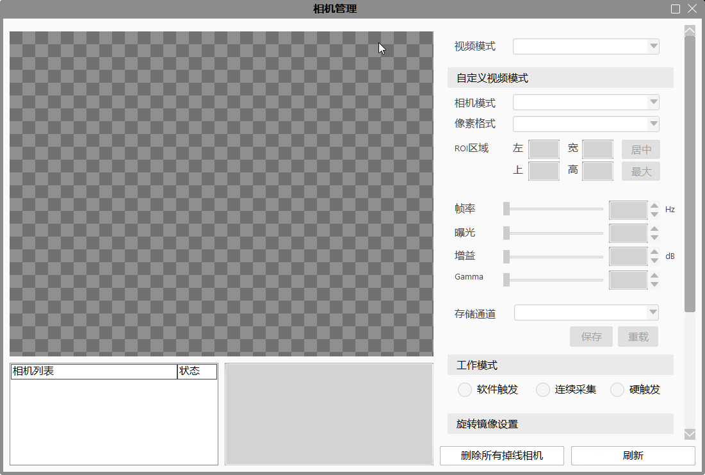
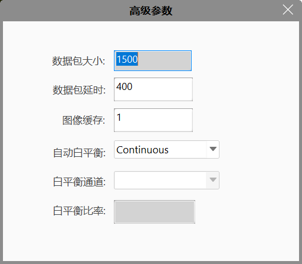
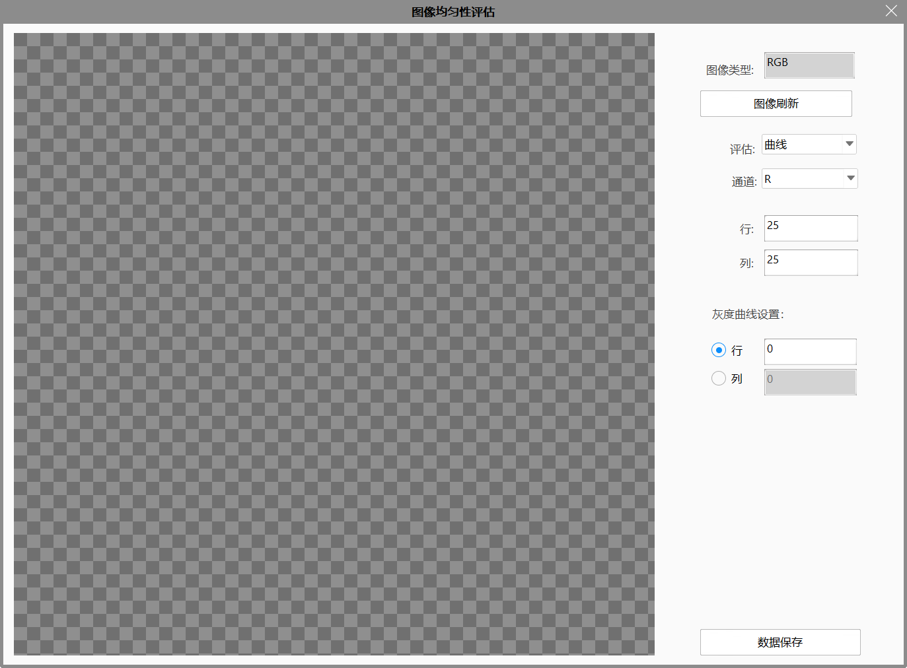

相机管理
工程中使用的相机，通过功能区-设置里的相机管理，进行参数设置及管理。

相机列表
显示可检测到的相机序列号及状态；
显示选中相机的型号、驱动、分辨率等信息；
图像显示区
设置
操作按钮
- 删除所有掉线相机：检测已掉线相机，并从相机列表中将其删除；
- 刷新：刷新相机列表；
- 确定：保存当前设置，并退出相机管理；
- 取消：取消当前设置，并退出相机管理。
高级参数

- 数据包大小：传输的数据包大小，只读类型，如果是1500表示网卡等基本设置没有设置好，8164位正常值；
- 数据包延时：发送数据包的间隔，可以改善丢包情况，设置过大会影响帧率；
- 图像缓存：缓存图像数，用于飞拍存储图像，飞拍几次设置为几；
- 自动白平衡：设置白平衡的模式，只对LBAS彩色相机有效，取值有Continuous、Once、Off；
- 白平衡通道：自动白平衡设置为Off时可用，可以选择R、G、B通道；
- 白平衡比率：对选定白平衡通道值的设置；
图像均匀性评估

- 图像展示区：展示刷新的图像和需要显示的均值图像或者曲线图像；
- 图像类型：显示图像类型是Gray还是RGB，只读类型；
- 图像刷新：采集一张图片，然后按照设置值计算图像均匀性并显示；
- 评估：展示图像均匀性的方式，有均值和曲线两种模式；
- 通道：按通道显示，只对RGB图像有效，均值取值是R、G、B三种，曲线取值是R、G、B、RGB四种；
- 行：计算图像均匀性时需要设置划分的行；
- 列：计算图像均匀性时需要设置划分的列；
- 行（复选框）及输入框：曲线模式时，按照选定的行展示；
- 列（复选框）及输入框：曲线模式时，按照选定的列展示；
- 数据保存：把图像均值计算结果保存的Excel表格；